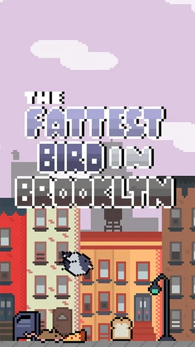
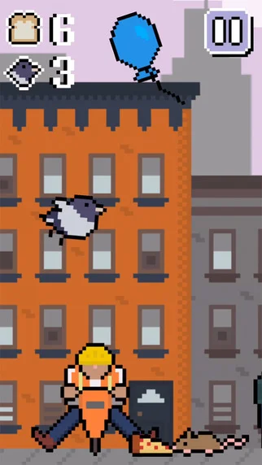
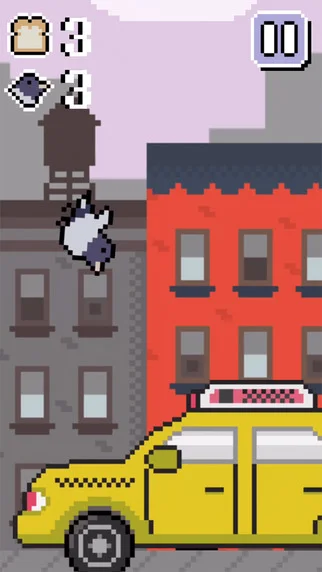
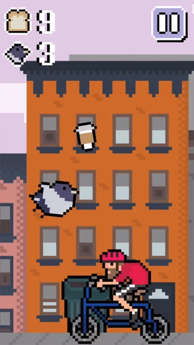
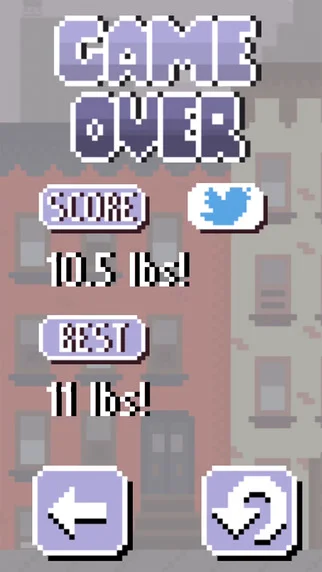

The Fattest Bird in Brooklyn
Role: Design, Programming, Art — everything
My first game made in Unity, The Fattest Bird in Brooklyn was an addictive tap-and-flap arcade game where players, swooping through the brownstone-lined streets of Brooklyn, had to snatch up every scrap of street bread they could find in hopes of becoming the plumpest pigeon around. Originally released for iOS in 2014 — no longer available.
A nominee at the inaugural Playcrafting NYC Awards.





Tap, flap, and swoop your way across the New York City skyline and see if you have the appetite to become the Fattest Bird in Brooklyn!
Gobble up all the savory street bread in your path, but watch out for bikers, hipsters, taxis, tourists, and other big city hazards along the way.
Do you have what it takes to become the Fattest Bird in Brooklyn?
8 Bit Operator courtesy of Grandoplex Productions. Munro courtesy of Ed Merritt.